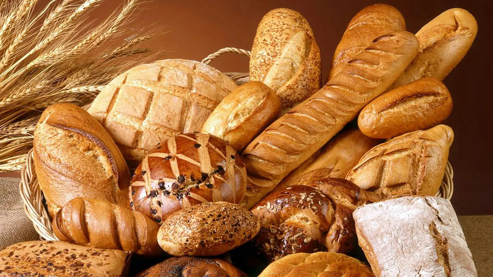

L'épicerie, la boucherie et le dépanneur du village, avec les plats de la cuisinière du marché. 12, rue Saint-Georges, à Saint-Séverin.

Soupes, crèmes du jour et plats préparés maison, à emporter ou à manger sur place.
L'essentiel du quotidien, sans aller en ville.
Ouvert 7 jours, de 8 h à 20 h.
Photos d'illustration — à remplacer par des photos du marché.
4,6 / 5 · 25 avis Google · voir sur Google Maps
« Magasin de village. Très propre avec une belle variété de produits. Tous les employés sont avenant et agréable. Toujours très bien servie. De passage dans notre village ? Arrêtez vous dans ce commerce où y goûter les plats fais maison par la cuisinière du marché et asseyez-vous dans la salle à manger dans le magasin. Vous ne le regretterez pas :) »
« Une belle épicerie, boucherie et dépanneur trois dans un! On y trouve ce que l'on cherche pour étancher la faim et la soif! Excellent service ! »
« Les repas préparés sont toujours excellents ! »
12, rue Saint-Georges
Saint-Séverin (QC) G0X 2B0
418-365-5934 · info@marchevb.com
Tous les jours, 8 h – 20 h